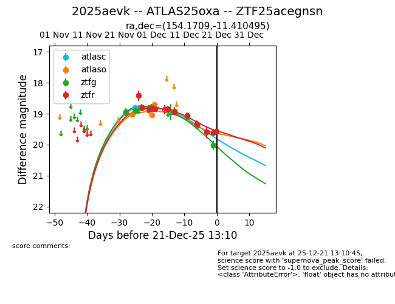
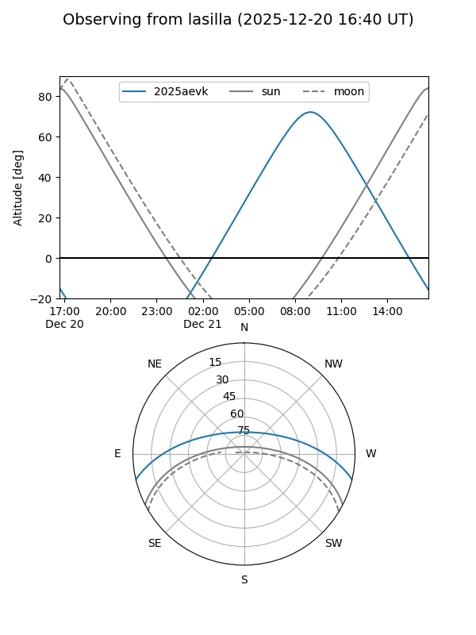
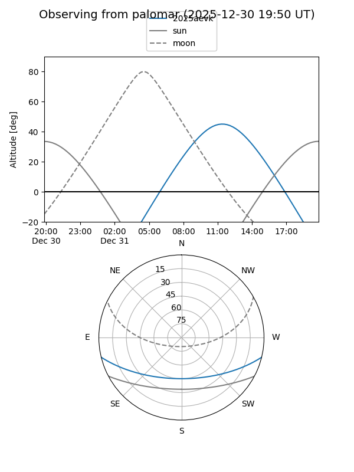
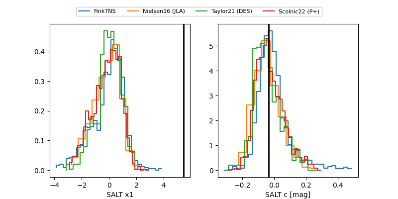

2025aevk
Target 2025aevk at 2025-12-20 13:29
Aliases and brokers:
FINK: fink-portal.org/ZTF25acegnsn
Lasair: lasair-ztf.lsst.ac.uk/objects/ZTF25acegnsn
ALeRCE: alerce.online/object/ZTF25acegnsn
TNS: wis-tns.org/object/2025aevk
YSE: ziggy.ucolick.org/yse/transient_detail/2025aevk
alt names
ZTF25acegnsn (ztf,fink_ztf)
2025aevk (tns,yse)
ATLAS25oxa (atlas)
Coordinates:
equatorial (ra, dec) = 154.1709,-11.41049
equatorial (HMS+DMS) = 10:16:41.01,-11:24:37.78
galactic (l, b) = (253.5202,+36.20980)
Flags:
Photometry:
last atlasc=18.80, atlaso=18.70, ztfg=20.02, ztfr=19.60
2 atlasc, 3 atlaso, 8 ztfg, 10 ztfr detections
Lightcurve

Visibility


Additional plots
